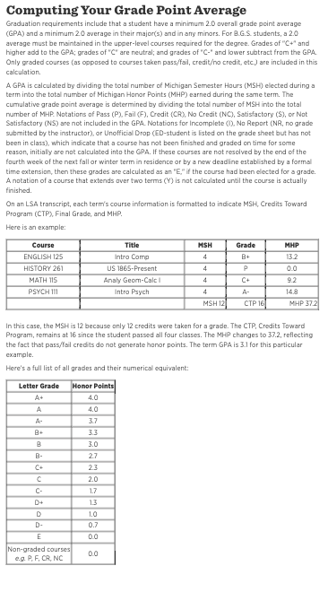

Welcome to the UofM GPA Calculator site, your go-to destination for calculating your academic performance efficiently and accurately. Whether you're aiming to keep track of your grades or planning your study schedule, our tool is designed to assist you.
In this site, you can access the calculator, and we also provide a guide on how to obtain the nessecary info needed
Why Choose Our Calculator?
Our GPA calculator is user-friendly, precise, and specifically designed to meet the needs of students across various educational institutions.
How to Use the GPA Calculator
Follow these steps to find out how many graded credits you have:
Example of locating total credits in Course Audit
Once you have the total credits, subtract the number of credits that aren't graded - Pass, Fail, Transfer etc to get your total graded credits
How to Find Your GPA
You can find your GPA in the audit checklist:
You can also find your GPA on your transcript:
GPA Scale
Understanding the GPA scale can help you set academic goals and measure your progress. Below is a visual guide to the GPA scale:
